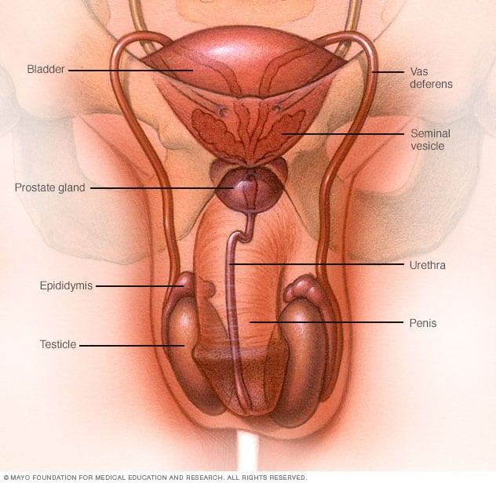

=SINTOMAS=
Algunas veces, la gonorrea no provoca síntomas.En los hombres, la gonorrea puede causar dolor al orinar
Secreción proveniente del pene.
De no tratarse, puede causar problemas en la próstata y testículos.
En las mujeres, los primeros síntomas de gonorrea generalmente son leves.
A medida que pasa el tiempo,puede provocar hemorragias entre los períodos menstruales
Dolor al orinar y aumento de las secreciones vaginales.
De no tratarse, puede provocar la enfermedad inflamatoria pélvica, que causa problemas en el embarazo e infertilidad.
|  |
|  |
=TRATAMIENTOS PARA LA GONORREA
MEDICACION.Antibióticos: Para matar las bacterias y eliminar la infección.NUTRICION.Alimentos para comer: